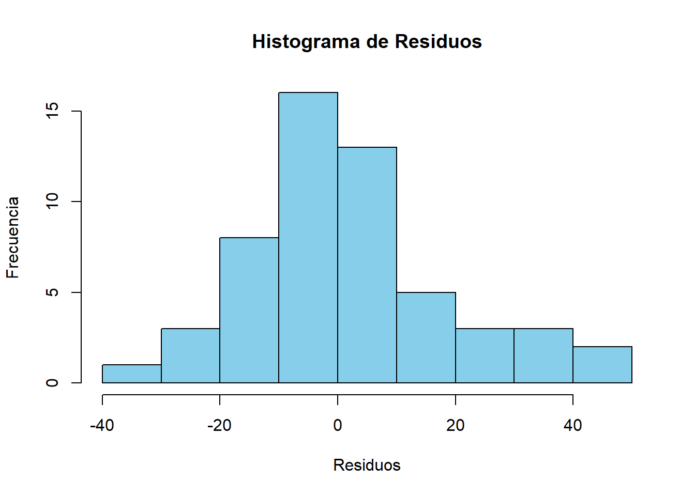

airbnb<-read.csv('airbnb-listings.csv',sep = ';')
options(repr.plot.height=4,repr.plot.width=6,repr.plot.res = 300)Vasmos a cargar el dataset de AirBnB descargado de aquí

- Vamos a quedarnos con las columnas de mayor interés: ‘City’,‘Room.Type’,‘Neighbourhood’,‘Accommodates’,‘Bathrooms’,‘Bedrooms’,‘Beds’,‘Price’,‘Square.Feet’,‘Guests.Included’,‘Extra.People’,‘Review.Scores.Rating’,‘Latitude’, ‘Longitude’ Nos quedarmos solo con las entradas de Madrid para Room.Type==“Entire home/apt” y cuyo barrio (Neighbourhood) no está vacio ’’ Podemos eliminar las siguientes columnas que ya no son necesarias: “Room.Type”,‘City’ Llama a nuevo dataframe df_madrid.
# Nos quedarmos solo con las entradas de Madrid para Room.Type=="Entire home/apt" y cuyo barrio (Neighbourhood) no está vacio
df_madrid <- airbnb[grepl("Madrid", airbnb$City, ignore.case = TRUE) &
airbnb$Room.Type == "Entire home/apt" &
airbnb$Neighbourhood != "", ]
# Vamos a quedarnos con las columnas de mayor interés
df_madrid <- df_madrid[, c('City','Room.Type','Neighbourhood','Accommodates','Bathrooms','Bedrooms','Beds','Price','Square.Feet','Guests.Included','Extra.People','Review.Scores.Rating','Latitude', 'Longitude')]
# Podemos eliminar las siguientes columnas que ya no son necesarias: "Room.Type",'City'
df_madrid <- df_madrid[, !(names(df_madrid) %in% c("Room.Type", "City"))]
# Resultado
head(df_madrid) Neighbourhood Accommodates Bathrooms Bedrooms Beds Price Square.Feet
3 Cortes 2 1 1 1 75 NA
10 Recoletos 3 1 1 1 106 NA
11 Malasaña 2 1 1 1 52 NA
12 Goya 3 1 0 2 40 NA
14 San Blas 4 1 1 1 50 NA
17 Palacio 4 1 1 2 82 NA
Guests.Included Extra.People Review.Scores.Rating Latitude Longitude
3 1 0 80 40.41362 -3.697618
10 1 0 NA 40.42255 -3.689689
11 2 25 92 40.42576 -3.707467
12 2 15 92 40.42607 -3.677779
14 1 0 100 40.43657 -3.618870
17 2 0 95 40.41797 -3.709786- Crea una nueva columna llamada Square.Meters a partir de Square.Feet. Recuerda que un pie cuadrado son 0.092903 metros cuadrados.
# Crea una nueva columna llamada Square.Meters a partir de Square.Feet
df_madrid$Square.Meters <- df_madrid$Square.Feet * 0.092903
# Resultado
head(df_madrid) Neighbourhood Accommodates Bathrooms Bedrooms Beds Price Square.Feet
3 Cortes 2 1 1 1 75 NA
10 Recoletos 3 1 1 1 106 NA
11 Malasaña 2 1 1 1 52 NA
12 Goya 3 1 0 2 40 NA
14 San Blas 4 1 1 1 50 NA
17 Palacio 4 1 1 2 82 NA
Guests.Included Extra.People Review.Scores.Rating Latitude Longitude
3 1 0 80 40.41362 -3.697618
10 1 0 NA 40.42255 -3.689689
11 2 25 92 40.42576 -3.707467
12 2 15 92 40.42607 -3.677779
14 1 0 100 40.43657 -3.618870
17 2 0 95 40.41797 -3.709786
Square.Meters
3 NA
10 NA
11 NA
12 NA
14 NA
17 NA- ¿Que porcentaje de los apartamentos no muestran los metros cuadrados? Es decir, ¿cuantos tienen NA en Square.Meters?
# Total de apartamentos
total_apartamentos <- nrow(df_madrid)
cat("Total de apartamentos:", total_apartamentos, "\n\n")Total de apartamentos: 5608 # Apartamentos sin valores en Square.Meters
apartamentos_sin_metros_cuadrados <- sum(is.na(df_madrid$Square.Meters))
cat("Apartamentos sin metros cuadrados:", apartamentos_sin_metros_cuadrados, "\n\n")Apartamentos sin metros cuadrados: 5261 # Porcentaje
porcentaje_faltantes <- (apartamentos_sin_metros_cuadrados / total_apartamentos) * 100
cat("Porcentaje de apartamentos sin metros cuadrados:", round(porcentaje_faltantes, 2), "%\n")Porcentaje de apartamentos sin metros cuadrados: 93.81 %- De todos los apartamentos que tienen un valor de metros cuadrados diferente de NA ¿Que porcentaje de los apartamentos tienen 0 metros cuadrados?
# Apartamentos con valores en Square.Meters
total_apartamentos_con_metros_cuadrados = sum(!is.na(df_madrid$Square.Meters))
cat("Apartamentos con metros cuadrados:", total_apartamentos_con_metros_cuadrados, "\n\n")Apartamentos con metros cuadrados: 347 # Apartamentos 0 metros cuadrados
apartamentos_con_cero_metros_cuadrados = sum(!is.na(df_madrid$Square.Meters) & df_madrid$Square.Meters == 0)
cat("Apartamentos con cero metros cuadrados:", apartamentos_con_cero_metros_cuadrados, "\n\n")Apartamentos con cero metros cuadrados: 128 # Porcentaje
porcentaje_cero_metros_cuadrados = (apartamentos_con_cero_metros_cuadrados / total_apartamentos_con_metros_cuadrados) * 100
cat("Porcentaje de apartamentos con 0 metros cuadrados:", round(porcentaje_cero_metros_cuadrados, 2), "%\n")Porcentaje de apartamentos con 0 metros cuadrados: 36.89 %- Reemplazar todos los 0m^2 por NA
# Reemplaza los valores de 0 metros cuadrados por NA
df_madrid$Square.Meters[df_madrid$Square.Meters == 0] <- NA
# Resultado
head(df_madrid) Neighbourhood Accommodates Bathrooms Bedrooms Beds Price Square.Feet
3 Cortes 2 1 1 1 75 NA
10 Recoletos 3 1 1 1 106 NA
11 Malasaña 2 1 1 1 52 NA
12 Goya 3 1 0 2 40 NA
14 San Blas 4 1 1 1 50 NA
17 Palacio 4 1 1 2 82 NA
Guests.Included Extra.People Review.Scores.Rating Latitude Longitude
3 1 0 80 40.41362 -3.697618
10 1 0 NA 40.42255 -3.689689
11 2 25 92 40.42576 -3.707467
12 2 15 92 40.42607 -3.677779
14 1 0 100 40.43657 -3.618870
17 2 0 95 40.41797 -3.709786
Square.Meters
3 NA
10 NA
11 NA
12 NA
14 NA
17 NAHay muchos NAs, vamos a intentar crear un modelo que nos prediga cuantos son los metros cuadrados en función del resto de variables para tratar de rellenar esos NA. Pero antes de crear el modelo vamos a hacer: * pintar el histograma de los metros cuadrados y ver si tenemos que filtrar algún elemento más. * crear una variable sintética nueva basada en la similitud entre barrios que usaremos en nuestro modelo.
- Pinta el histograma de los metros cuadrados y ver si tenemos que filtrar algún elemento más
library(ggplot2)
# Histograma
ggplot(df_madrid, aes(x = Square.Meters)) +
geom_histogram(binwidth = 5, fill = "skyblue", color = "black") +
labs(title = "Histograma de Metros Cuadrados en AirBnB Madrid",
x = "Metros Cuadrados",
y = "Frecuencia")Warning: Removed 5389 rows containing non-finite values (`stat_bin()`).Hay apartamentos con tamaños muy pequeños (menos de 20m2), lo que podría considerarse como valores atípicos. Estos valores podrían ser apartamentos tipo estudio o habitaciones más pequeñas. También hay apartamentos con tamaños iguales o superiores a unos200m2.
- Asigna el valor NA a la columna Square.Meters de los apartamentos que tengan menos de 20 m^2
# Asigna el valor NA a los apartamentos de menos de 20 metros cuadrados
df_madrid$Square.Meters[df_madrid$Square.Meters < 20] <- NA
# Modifico también los valores mayores a 175m2
df_madrid$Square.Meters[df_madrid$Square.Meters > 175] <- NA
# Resultado
head(df_madrid) Neighbourhood Accommodates Bathrooms Bedrooms Beds Price Square.Feet
3 Cortes 2 1 1 1 75 NA
10 Recoletos 3 1 1 1 106 NA
11 Malasaña 2 1 1 1 52 NA
12 Goya 3 1 0 2 40 NA
14 San Blas 4 1 1 1 50 NA
17 Palacio 4 1 1 2 82 NA
Guests.Included Extra.People Review.Scores.Rating Latitude Longitude
3 1 0 80 40.41362 -3.697618
10 1 0 NA 40.42255 -3.689689
11 2 25 92 40.42576 -3.707467
12 2 15 92 40.42607 -3.677779
14 1 0 100 40.43657 -3.618870
17 2 0 95 40.41797 -3.709786
Square.Meters
3 NA
10 NA
11 NA
12 NA
14 NA
17 NA# Histograma actualizado
ggplot(df_madrid, aes(x = Square.Meters)) +
geom_histogram(binwidth = 5, fill = "skyblue", color = "black") +
labs(title = "Histograma de Metros Cuadrados en AirBnB Madrid",
x = "Metros Cuadrados",
y = "Frecuencia")Warning: Removed 5438 rows containing non-finite values (`stat_bin()`).- Existen varios Barrios que todas sus entradas de Square.Meters son NA, vamos a eliminar del dataset todos los pisos que pertenecen a estos barrios.
library(dplyr)
Attaching package: 'dplyr'The following objects are masked from 'package:stats':
filter, lagThe following objects are masked from 'package:base':
intersect, setdiff, setequal, uniontotal_apartamentos <- summarise(group_by(df_madrid, Neighbourhood), total_apartamentos = n())
apartamentos_con_na <- summarise(group_by(df_madrid, Neighbourhood), apartamentos_con_na = sum(is.na(Square.Meters)))
join <- left_join(total_apartamentos, apartamentos_con_na, by = "Neighbourhood")
barrios_a_excluir <- join$Neighbourhood[join$total_apartamentos == join$apartamentos_con_na]
cat("Barrios a excluir:", barrios_a_excluir, "\n\n")Barrios a excluir: Aluche Arganzuela Atocha Bellas Vistas Berruguete Castillejos Delicias Estrella Fuencarral-El Pardo Fuencarral-el Pardo Gaztambide Guindalera Hispanoamérica Hortaleza Ibiza Imperial La Chopera Legazpi Moncloa Nueva España Prosperidad Puente de Vallecas Rios Rosas Tetuán Valdeacederas Vallehermosa Villa de Vallecas Villaverde df_madrid <- filter(df_madrid, !(Neighbourhood %in% barrios_a_excluir))El barrio parece ser un indicador importante para los metros cuadrados de un apartamento.
Vamos a agrupar los barrios por metros cuadrados. Podemos usar una matriz de similaridad de Tukey tal y como hicimos en el curso de estadística:
tky<-TukeyHSD(aov( formula=Square.Meters~Neighbourhood, data=df_madrid ))
tky.result<-data.frame(tky$Neighbourhood)
cn <-sort(unique(df_madrid$Neighbourhood))
resm <- matrix(NA, length(cn),length(cn))
rownames(resm) <- cn
colnames(resm) <- cn
resm[lower.tri(resm) ] <- round(tky.result$p.adj,4)
resm[upper.tri(resm) ] <- t(resm)[upper.tri(resm)]
diag(resm) <- 1
library(ggplot2)
library(reshape2)
dfResm <- melt(resm)
ggplot(dfResm, aes(x=Var1, y=Var2, fill=value))+
geom_tile(colour = "black")+
scale_fill_gradient(low = "white",high = "steelblue")+
ylab("Class")+xlab("Class")+theme_bw()+
theme(axis.text.x = element_text(angle = 90, hjust = 1),legend.position="none")- Usando como variable de distancia: 1-resm Dibuja un dendrograma de los diferentes barrios.
library(ggplot2)
library(reshape2)
library(dendextend)
---------------------
Welcome to dendextend version 1.17.1
Type citation('dendextend') for how to cite the package.
Type browseVignettes(package = 'dendextend') for the package vignette.
The github page is: https://github.com/talgalili/dendextend/
Suggestions and bug-reports can be submitted at: https://github.com/talgalili/dendextend/issues
You may ask questions at stackoverflow, use the r and dendextend tags:
https://stackoverflow.com/questions/tagged/dendextend
To suppress this message use: suppressPackageStartupMessages(library(dendextend))
---------------------
Attaching package: 'dendextend'The following object is masked from 'package:stats':
cutree# Distancia
dist <- 1 - resm
str(dist) num [1:37, 1:37] 0 0 0 0 0 0 0 0 0.126 0 ...
- attr(*, "dimnames")=List of 2
..$ : chr [1:37] "Acacias" "Adelfas" "Almagro" "Almenara" ...
..$ : chr [1:37] "Acacias" "Adelfas" "Almagro" "Almenara" ...# Dendrograma
hc <- hclust(as.dist(dist), method = "complete")
hcd <- as.dendrogram(hc)
plot(hcd, main = "Dendrograma de Barrios", xlab = "Barrios", ylab = "Distancia")- ¿Que punto de corte sería el aconsejable?, ¿cuantos clusters aparecen?
Se pueden observar dos clústeres principales. Un punto de corte aconsejable podría ser alrededor de 0.6
hcd <- as.dendrogram(hc)
hcd <- set(hcd,"labels_cex", 0.45)
plot(color_branches(hcd,h=0.5),horiz=TRUE,cex=0)
abline(v=0.6,col="purple")clusters<-cutree(hc,h=0.6)- Vamos a crear una nueva columna en el dataframe df_madrid con un nuevo identificador marcado por los clusters obtenidos. Esta columna la llamaremos neighb_id
df_clusters<-data.frame(names=names(clusters),neighb_id=paste0("Cluster_",clusters))
df_madrid<-merge(df_madrid,df_clusters,by.x = "Neighbourhood",by.y='names')
# Resultados
head(df_clusters,10) names neighb_id
1 Acacias Cluster_1
2 Adelfas Cluster_1
3 Almagro Cluster_1
4 Almenara Cluster_1
5 Arapiles Cluster_1
6 Argüelles Cluster_1
7 Barajas Cluster_2
8 Carabanchel Cluster_1
9 Castellana Cluster_3
10 Castilla Cluster_1head(df_madrid) Neighbourhood Accommodates Bathrooms Bedrooms Beds Price Square.Feet
1 Acacias 3 1 1 2 45 NA
2 Acacias 2 1 1 1 50 NA
3 Acacias 6 2 3 4 100 NA
4 Acacias 2 1 0 1 39 NA
5 Acacias 6 1 2 3 60 NA
6 Acacias 2 1 1 1 75 NA
Guests.Included Extra.People Review.Scores.Rating Latitude Longitude
1 2 10 100 40.40404 -3.703835
2 1 0 69 40.40221 -3.711326
3 1 0 NA 40.40265 -3.702798
4 1 0 100 40.40094 -3.702806
5 2 10 88 40.40554 -3.710429
6 1 0 100 40.40460 -3.708392
Square.Meters neighb_id
1 NA Cluster_1
2 NA Cluster_1
3 NA Cluster_1
4 NA Cluster_1
5 NA Cluster_1
6 NA Cluster_1- Vamos a crear dos grupos, uno test y otro train.
# 70% train y 30% test
set.seed(123)
idx <- sample(1:nrow(df_madrid),nrow(df_madrid)*0.7)
# df train y test
df_train <- df_madrid[idx, ]
df_test <- df_madrid[-idx, ]summary(df_train) Neighbourhood Accommodates Bathrooms Bedrooms
Length:3407 Min. : 1.0 Min. :0.000 Min. : 0.000
Class :character 1st Qu.: 3.0 1st Qu.:1.000 1st Qu.: 1.000
Mode :character Median : 4.0 Median :1.000 Median : 1.000
Mean : 4.1 Mean :1.243 Mean : 1.418
3rd Qu.: 5.0 3rd Qu.:1.000 3rd Qu.: 2.000
Max. :16.0 Max. :6.000 Max. :10.000
NA's :9 NA's :5
Beds Price Square.Feet Guests.Included
Min. : 1.000 Min. : 18.00 Min. : 0.0 Min. : 1.000
1st Qu.: 1.000 1st Qu.: 59.00 1st Qu.: 0.0 1st Qu.: 1.000
Median : 2.000 Median : 75.00 Median : 323.0 Median : 2.000
Mean : 2.379 Mean : 90.42 Mean : 415.2 Mean : 1.952
3rd Qu.: 3.000 3rd Qu.:100.00 3rd Qu.: 700.0 3rd Qu.: 2.000
Max. :16.000 Max. :800.00 Max. :5167.0 Max. :10.000
NA's :6 NA's :2 NA's :3189
Extra.People Review.Scores.Rating Latitude Longitude
Min. : 0.000 Min. : 20.00 Min. :40.36 Min. :-3.761
1st Qu.: 0.000 1st Qu.: 88.00 1st Qu.:40.41 1st Qu.:-3.707
Median : 10.000 Median : 93.00 Median :40.42 Median :-3.702
Mean : 8.918 Mean : 91.53 Mean :40.42 Mean :-3.700
3rd Qu.: 15.000 3rd Qu.: 97.00 3rd Qu.:40.42 3rd Qu.:-3.697
Max. :276.000 Max. :100.00 Max. :40.48 Max. :-3.576
NA's :480
Square.Meters neighb_id
Min. : 22.02 Length:3407
1st Qu.: 44.97 Class :character
Median : 65.03 Mode :character
Mean : 68.28
3rd Qu.: 79.99
Max. :165.00
NA's :3296 summary(df_test) Neighbourhood Accommodates Bathrooms Bedrooms
Length:1461 Min. : 1.00 Min. :0.000 Min. :0.000
Class :character 1st Qu.: 3.00 1st Qu.:1.000 1st Qu.:1.000
Mode :character Median : 4.00 Median :1.000 Median :1.000
Mean : 4.07 Mean :1.245 Mean :1.418
3rd Qu.: 5.00 3rd Qu.:1.000 3rd Qu.:2.000
Max. :16.00 Max. :5.000 Max. :5.000
NA's :5 NA's :2
Beds Price Square.Feet Guests.Included
Min. : 1.000 Min. : 23.00 Min. : 0.0 Min. : 1.000
1st Qu.: 1.000 1st Qu.: 59.00 1st Qu.: 0.0 1st Qu.: 1.000
Median : 2.000 Median : 76.00 Median : 323.0 Median : 2.000
Mean : 2.334 Mean : 90.44 Mean : 375.3 Mean : 1.962
3rd Qu.: 3.000 3rd Qu.:100.00 3rd Qu.: 603.0 3rd Qu.: 2.000
Max. :12.000 Max. :577.00 Max. :2153.0 Max. :15.000
NA's :2 NA's :3 NA's :1346
Extra.People Review.Scores.Rating Latitude Longitude
Min. : 0.000 Min. : 20.00 Min. :40.36 Min. :-3.755
1st Qu.: 0.000 1st Qu.: 88.00 1st Qu.:40.41 1st Qu.:-3.707
Median : 10.000 Median : 93.00 Median :40.42 Median :-3.702
Mean : 9.279 Mean : 91.23 Mean :40.42 Mean :-3.699
3rd Qu.: 15.000 3rd Qu.: 97.00 3rd Qu.:40.42 3rd Qu.:-3.697
Max. :250.000 Max. :100.00 Max. :40.48 Max. :-3.579
NA's :205
Square.Meters neighb_id
Min. : 24.99 Length:1461
1st Qu.: 43.01 Class :character
Median : 55.00 Mode :character
Mean : 62.36
3rd Qu.: 72.46
Max. :140.00
NA's :1402 - Tratamos de predecir los metros cuadrados en función del resto de columnas del dataframe.
# Modelo de regresión lineal
model <- lm(Square.Meters ~ Accommodates + Bathrooms + Bedrooms + Price + Beds +
Guests.Included + Extra.People + Review.Scores.Rating + Latitude + Longitude,
data = df_train)
# Resultado
summary(model)
Call:
lm(formula = Square.Meters ~ Accommodates + Bathrooms + Bedrooms +
Price + Beds + Guests.Included + Extra.People + Review.Scores.Rating +
Latitude + Longitude, data = df_train)
Residuals:
Min 1Q Median 3Q Max
-40.203 -10.075 -2.184 8.216 55.643
Coefficients:
Estimate Std. Error t value Pr(>|t|)
(Intercept) -3.362e+03 5.268e+03 -0.638 0.52492
Accommodates 3.500e+00 2.024e+00 1.729 0.08701 .
Bathrooms 1.516e+01 4.744e+00 3.196 0.00189 **
Bedrooms 1.517e+01 3.285e+00 4.618 1.2e-05 ***
Price 5.059e-02 2.636e-02 1.919 0.05793 .
Beds -1.854e+00 2.338e+00 -0.793 0.42972
Guests.Included -3.691e+00 1.823e+00 -2.025 0.04564 *
Extra.People 1.024e-01 2.174e-01 0.471 0.63880
Review.Scores.Rating 2.566e-01 2.645e-01 0.970 0.33451
Latitude 8.703e+01 1.258e+02 0.692 0.49054
Longitude 4.466e+01 9.772e+01 0.457 0.64871
---
Signif. codes: 0 '***' 0.001 '**' 0.01 '*' 0.05 '.' 0.1 ' ' 1
Residual standard error: 18.14 on 96 degrees of freedom
(3300 observations deleted due to missingness)
Multiple R-squared: 0.6524, Adjusted R-squared: 0.6162
F-statistic: 18.02 on 10 and 96 DF, p-value: < 2.2e-16- Mirad el histograma de los residuos sobre el conjunto de test para evaluar la calidad de vuestro modelo
# Residuos
residuos <- df_test$Square.Meters - predict(model, newdata = df_test)
# Histograma
hist(residuos, main = "Histograma de Residuos", xlab = "Residuos", ylab = "Frecuencia", col = "skyblue")
En general, el modelo parece tener un buen ajuste. Los residuos siguen una distribución relativamente normal con una ligera asimetría. Esto es positivo, ya que sugiere que los errores están distribuidos de manera uniforme alrededor del valor medio. Variables como Bathrooms y Bedrooms son altamente significativas (p < 0.01), lo que indica su influencia en los metros cuadrados. El Adjusted R-squared es 0.6162, lo que significa que el modelo explica aproximadamente el 61.62% de la variabilidad en los metros cuadrados. El p-value extremadamente bajo sugiere que el modelo en su conjunto es significativo.
- Si tuvieramos un anuncio de un apartamento para 6 personas (Accommodates), con 1 baño, con un precio de 80€/noche y 3 habitaciones en el barrio de Sol, con 3 camas y un review de 80. ¿Cuantos metros cuadrados tendría? Si tu modelo necesita algúna variable adicional puedes inventartela dentro del rango de valores del dataset. ¿Como varía sus metros cuadrados con cada habitación adicional?
new_apartment <- data.frame(Accommodates = 6,
Bathrooms = 1,
Bedrooms = 3,
Price = 80,
Beds = 3,
Guests.Included = 6,
Extra.People = 0,
Review.Scores.Rating = 80,
Latitude = 40.4165, # Asumimos una latitud dentro del rango
Longitude = -3.7026 # Asumimos una longitud dentro del rango
)
predicted_sqm <- predict(model, newdata = new_apartment)
cat("Metros cuadrados estimados:", round(predicted_sqm, 2), "\n")Metros cuadrados estimados: 69.2 - Rellenar los Square.Meters con valor NA con el estimado con el modelo anterior.
summary(df_madrid) Neighbourhood Accommodates Bathrooms Bedrooms
Length:4868 Min. : 1.000 Min. :0.000 Min. : 0.000
Class :character 1st Qu.: 3.000 1st Qu.:1.000 1st Qu.: 1.000
Mode :character Median : 4.000 Median :1.000 Median : 1.000
Mean : 4.091 Mean :1.243 Mean : 1.418
3rd Qu.: 5.000 3rd Qu.:1.000 3rd Qu.: 2.000
Max. :16.000 Max. :6.000 Max. :10.000
NA's :14 NA's :7
Beds Price Square.Feet Guests.Included
Min. : 1.000 Min. : 18.00 Min. : 0.0 Min. : 1.000
1st Qu.: 1.000 1st Qu.: 59.00 1st Qu.: 0.0 1st Qu.: 1.000
Median : 2.000 Median : 75.00 Median : 323.0 Median : 2.000
Mean : 2.366 Mean : 90.43 Mean : 401.4 Mean : 1.955
3rd Qu.: 3.000 3rd Qu.:100.00 3rd Qu.: 646.0 3rd Qu.: 2.000
Max. :16.000 Max. :800.00 Max. :5167.0 Max. :15.000
NA's :8 NA's :5 NA's :4535
Extra.People Review.Scores.Rating Latitude Longitude
Min. : 0.000 Min. : 20.00 Min. :40.36 Min. :-3.761
1st Qu.: 0.000 1st Qu.: 88.00 1st Qu.:40.41 1st Qu.:-3.707
Median : 10.000 Median : 93.00 Median :40.42 Median :-3.702
Mean : 9.027 Mean : 91.44 Mean :40.42 Mean :-3.700
3rd Qu.: 15.000 3rd Qu.: 97.00 3rd Qu.:40.42 3rd Qu.:-3.697
Max. :276.000 Max. :100.00 Max. :40.48 Max. :-3.576
NA's :685
Square.Meters neighb_id
Min. : 22.02 Length:4868
1st Qu.: 44.97 Class :character
Median : 60.02 Mode :character
Mean : 66.22
3rd Qu.: 78.73
Max. :165.00
NA's :4698 df_madrid$Square.Meters[is.na(df_madrid$Square.Meters)] <- predict(model, newdata = df_madrid[is.na(df_madrid$Square.Meters), ])summary(df_madrid) Neighbourhood Accommodates Bathrooms Bedrooms
Length:4868 Min. : 1.000 Min. :0.000 Min. : 0.000
Class :character 1st Qu.: 3.000 1st Qu.:1.000 1st Qu.: 1.000
Mode :character Median : 4.000 Median :1.000 Median : 1.000
Mean : 4.091 Mean :1.243 Mean : 1.418
3rd Qu.: 5.000 3rd Qu.:1.000 3rd Qu.: 2.000
Max. :16.000 Max. :6.000 Max. :10.000
NA's :14 NA's :7
Beds Price Square.Feet Guests.Included
Min. : 1.000 Min. : 18.00 Min. : 0.0 Min. : 1.000
1st Qu.: 1.000 1st Qu.: 59.00 1st Qu.: 0.0 1st Qu.: 1.000
Median : 2.000 Median : 75.00 Median : 323.0 Median : 2.000
Mean : 2.366 Mean : 90.43 Mean : 401.4 Mean : 1.955
3rd Qu.: 3.000 3rd Qu.:100.00 3rd Qu.: 646.0 3rd Qu.: 2.000
Max. :16.000 Max. :800.00 Max. :5167.0 Max. :15.000
NA's :8 NA's :5 NA's :4535
Extra.People Review.Scores.Rating Latitude Longitude
Min. : 0.000 Min. : 20.00 Min. :40.36 Min. :-3.761
1st Qu.: 0.000 1st Qu.: 88.00 1st Qu.:40.41 1st Qu.:-3.707
Median : 10.000 Median : 93.00 Median :40.42 Median :-3.702
Mean : 9.027 Mean : 91.44 Mean :40.42 Mean :-3.700
3rd Qu.: 15.000 3rd Qu.: 97.00 3rd Qu.:40.42 3rd Qu.:-3.697
Max. :276.000 Max. :100.00 Max. :40.48 Max. :-3.576
NA's :685
Square.Meters neighb_id
Min. : 0.4397 Length:4868
1st Qu.: 48.9560 Class :character
Median : 54.7586 Mode :character
Mean : 62.7159
3rd Qu.: 73.7419
Max. :239.7365
NA's :698 - Usar PCA para encontrar el apartamento más cercano a uno dado. Este algoritmo nos ayudaría a dado un apartamento que el algoritmo nos devolvería los 5 apartamentos más similares.
Crearemos una función tal que le pasemos un apartamento con los siguientes datos: * Accommodates * Bathrooms * Bedrooms * Beds * Price * Guests.Included * Extra.People * Review.Scores.Rating * Latitude * Longitude * Square.Meters
y nos devuelva los 5 más similares de:
Este ejercicio me ha vuelto loca. No paraba de darme cada vez un error diferente y he tirado de IA (a la que también se le ha hecho bola y entraba en bucle con los errores que le iba reportando). Al final conseguí crear la función y que, tal vez no el mejor, pero al menos me devuelva un resultado.
# Eliminar filas con valores faltantes en las características relevantes (esto lo incluyo pq me estaba dando error al ejecutar el código)
df_madrid_pca <- na.omit(df_madrid[, c("Accommodates", "Bathrooms", "Bedrooms", "Beds", "Price",
"Review.Scores.Rating", "Latitude", "Longitude")])
# Encontrar los apartamentos más similares
encontrar_apartamentos_similares <- function(apartamento_nuevo, df_madrid_pca, num_vecinos = 5) {
# Características relevantes
nombres_caracteristicas <- c("Accommodates", "Bathrooms", "Bedrooms", "Beds", "Price",
"Review.Scores.Rating", "Latitude", "Longitude")
# Estandarizar las características del df
df_escalado <- scale(df_madrid_pca[nombres_caracteristicas])
# Aplicar PCA
pca <- prcomp(df_escalado, center = TRUE)
# Preparar el apartamento nuevo para la predicción
apartamento_nuevo_escalado <- scale(as.matrix(apartamento_nuevo[nombres_caracteristicas]), center = pca$center, scale = pca$scale)
colnames(apartamento_nuevo_escalado) <- nombres_caracteristicas # (esto lo incluyo pq me estaba dando error al ejecutar el código)
apartamento_nuevo_df <- as.data.frame(apartamento_nuevo_escalado)
# Aplicar PCA al apartamento nuevo
apartamento_nuevo_pca <- predict(pca, newdata = apartamento_nuevo_df)
apartamento_nuevo_pca <- apartamento_nuevo_pca[, 1:2]
# df PCA para los apartamentos existentes
df_pca <- as.data.frame(pca$x[, 1:2])
# Distancias
distancias <- sqrt(rowSums((df_pca - apartamento_nuevo_pca)^2))
# Índices
indices_vecinos_cercanos <- order(distancias)[1:num_vecinos]
# Apartamentos más similares
return(df_madrid_pca[indices_vecinos_cercanos, ])
}
# Ejemplo
apartamento_nuevo <- data.frame(Accommodates = 4,
Bathrooms = 1,
Bedrooms = 2,
Beds = 2,
Price = 100,
Review.Scores.Rating = 95,
Latitude = 40.4165,
Longitude = -3.7026)
# Resultado
apartamentos_similares <- encontrar_apartamentos_similares(apartamento_nuevo, df_madrid_pca, 5)
print(apartamentos_similares) Accommodates Bathrooms Bedrooms Beds Price Review.Scores.Rating Latitude
855 16 3.0 7 16 550 82 40.41631
1856 16 5.0 5 13 365 98 40.41826
1900 14 5.0 5 10 500 100 40.42340
4060 10 4.5 5 8 600 100 40.42501
3807 11 4.0 6 9 450 100 40.41989
Longitude
855 -3.700803
1856 -3.690208
1900 -3.695154
4060 -3.687864
3807 -3.708749